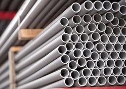
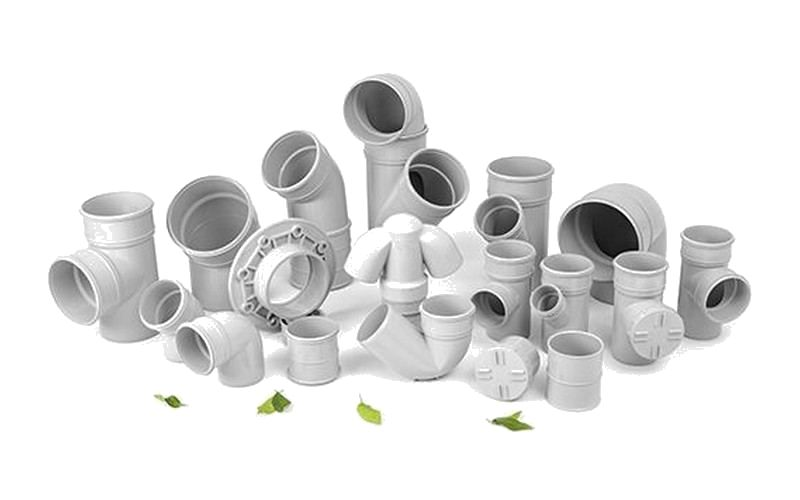
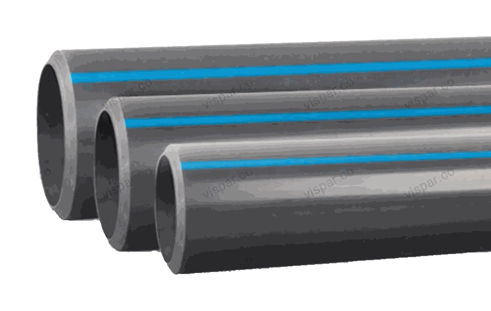

انتخاب صحیح لوله و اتصالات یکی از مهمترین مراحل در اجرای یک سیستم تأسیساتی استاندارد است. کیفیت متریال مورد استفاده، علاوه بر تأثیر مستقیم بر عملکرد سیستم، نقش مهمی در کاهش هزینههای تعمیرات، افزایش طول عمر تجهیزات و جلوگیری از مشکلاتی مانند نشتی، خوردگی و افت راندمان دارد.
در سالهای اخیر، استفاده از لولهها و اتصالات پلیمری به دلیل مزایایی مانند وزن کم، مقاومت در برابر خوردگی و نصب آسان، جایگزین بسیاری از سیستمهای سنتی فلزی شده است. در میان این محصولات، PVC و UPVC از پرکاربردترین مواد اولیه در صنعت ساختمان و تأسیسات محسوب میشوند.
هر دو از خانواده پلیوینیل کلراید هستند، اما تفاوت در ساختار تولید و ویژگیهای فنی باعث شده هرکدام برای کاربردهای مشخصی مناسب باشند. در این مقاله از مجموعه آموزشهای تخصصی ساویسمان، تفاوت PVC و UPVC را از نظر ساختار، ویژگیهای فنی، کاربرد، مزایا و محدودیتها بررسی میکنیم.
PVC چیست؟
PVC مخفف عبارت Polyvinyl Chloride و به معنی «پلیوینیل کلراید» است — یکی از پرکاربردترین پلیمرها در صنعت ساختمان و تأسیسات. این ماده به دلیل مقاومت مناسب در برابر رطوبت، خوردگی و بسیاری از مواد شیمیایی، سالهاست در تولید محصولات مختلف ساختمانی استفاده میشود.
یکی از مهمترین ویژگیهای PVC، قابلیت تولید در شرایط مختلف با خواص متفاوت است. با تغییر ترکیبات و افزودنیهای فرآیند تولید، میتوان محصولاتی با میزان انعطافپذیری و سختی متفاوت تولید کرد.
در حوزه تأسیسات ساختمان، یکی از مهمترین کاربردهای PVC تولید لوله و اتصالات فاضلابی است. سیستمهای فاضلاب ساختمانی معمولاً تحت فشار داخلی بالا قرار ندارند و مهمترین ویژگیهای مورد نیاز شامل موارد زیر است:
- مقاومت در برابر رطوبت و خوردگی
- آببندی مناسب اتصالات
- وزن پایین و حمل آسان
- سرعت بالای اجرا
- طول عمر مناسب
به همین دلیل، لوله و اتصالات فاضلابی PVC به یکی از انتخابهای رایج در پروژههای ساختمانی تبدیل شدهاند. برندهایی مانند صدراپلاست و مولتیپایپ در زمینه تولید لوله و اتصالات فاضلابی PVC فعالیت دارند و محصولاتشان در پروژههای مختلف ساختمانی استفاده میشود.


UPVC چیست؟
UPVC مخفف عبارت Unplasticized Polyvinyl Chloride است. تفاوت اصلی UPVC با PVC در فرآیند تولید آن است؛ در ساخت UPVC از نرمکنندهها استفاده نمیشود. حذف این مواد باعث میشود ساختار نهایی محصول سختتر، پایدارتر و مقاومتر باشد.
همین ویژگی باعث شده UPVC برای کاربردهایی که نیاز به مقاومت بالاتر، پایداری طولانیمدت و عملکرد مطمئنتر دارند، گزینه مناسبی باشد. در صنعت تأسیسات، لوله و اتصالات UPVC بیشتر در پروژههایی استفاده میشوند که سیستم در معرض موارد زیر قرار دارد:
- فشار کاری
- رطوبت دائمی
- مواد شیمیایی
- شرایط محیطی سخت
از مهمترین کاربردهای UPVC میتوان به موارد زیر اشاره کرد:
- سیستمهای لولهکشی استخری
- خطوط تصفیه آب و استخر
- انتقال آب در برخی پروژههای تأسیساتی
- صنایع شیمیایی با شرایط کاری مشخص
در پروژههای استخری، استفاده از UPVC اهمیت ویژهای دارد؛ زیرا لولهها و اتصالات علاوه بر تماس دائمی با آب، باید در برابر موادی مانند کلر و مواد مورد استفاده در فرآیند تصفیه، مقاومت مناسبی داشته باشند. برندهایی مانند ویسپار با تولید لوله و اتصالات استخری UPVC، محصولاتی متناسب با نیاز این دسته از پروژهها ارائه میکنند.

برای مشاهده قیمت بهروز لوله و اتصالات فاضلابی PVC و استخری UPVC
مشاهده لیست قیمتتفاوت اصلی PVC و UPVC
مهمترین تفاوت این دو متریال به ساختار تولید آنها بازمیگردد. PVC به دلیل امکان استفاده از افزودنیهای مختلف، میتواند ویژگیهای متنوعی داشته باشد و در کاربردهای گستردهای استفاده شود. در مقابل، UPVC بدون استفاده از نرمکننده تولید میشود و به همین دلیل ساختاری سختتر و مقاومتر دارد.
به زبان ساده:
- PVC بیشتر برای کاربردهای عمومی و سیستمهایی که نیاز به انعطاف و شرایط کاری معمولی دارند استفاده میشود.
- UPVC برای کاربردهای تخصصیتر که مقاومت، دوام و پایداری اهمیت بیشتری دارد، انتخاب مناسبتری است.
جدول مقایسه PVC و UPVC
| ویژگی | PVC | UPVC |
|---|---|---|
| ساختار | پلیوینیل کلراید | پلیوینیل کلراید بدون نرمکننده |
| سختی | کمتر | بیشتر |
| مقاومت مکانیکی | مناسب | بالاتر |
| مقاومت در برابر فشار | متوسط | بیشتر |
| مقاومت شیمیایی | خوب | بسیار خوب |
| مقاومت در برابر خوردگی | مناسب | عالی |
| طول عمر | مناسب | بسیار بالا |
| کاربرد اصلی | لوله و اتصالات فاضلابی و عمومی | کاربردهای تخصصیتر مانند استخر و انتقال آب |
| نگهداری | کم | بسیار کم |
انتخاب PVC یا UPVC به چه عواملی بستگی دارد؟
انتخاب بین PVC و UPVC نباید تنها بر اساس قیمت انجام شود. نوع پروژه، شرایط کاری سیستم و ویژگیهای مورد انتظار، مهمترین عوامل تصمیمگیری هستند.
برای مثال، در سیستمهای فاضلاب ساختمانی، استفاده از PVC به دلیل مقاومت مناسب، اجرای آسان و هزینه اقتصادی، گزینهای متداول است. اما در پروژههایی مانند استخر، جکوزی و تصفیهخانه، شرایط متفاوت است؛ در این پروژهها مقاومت در برابر مواد شیمیایی، فشار کاری و تماس دائمی با آب اهمیت بیشتری دارد، بنابراین UPVC معمولاً انتخاب مناسبتری محسوب میشود.
مقایسه تخصصی از نظر عملکرد فنی
از نظر فشار کاری
یکی از مهمترین تفاوتهای PVC و UPVC، میزان مقاومت آنها در برابر فشارهای مکانیکی و هیدرولیکی است. به دلیل ساختار سختتر و عدم استفاده از نرمکنندهها، UPVC معمولاً استحکام مکانیکی بالاتری نسبت به PVC معمولی دارد. این ویژگی باعث شده لوله و اتصالات UPVC در سیستمهایی که نیاز به پایداری بیشتر دارند — مانند خطوط انتقال آب، استخرها و تجهیزات تصفیه — کاربرد گستردهتری داشته باشند.
در مقابل، PVC بیشتر در کاربردهایی استفاده میشود که فشار کاری پایینتر بوده و هدف اصلی، انتقال سیال، اجرای آسان و اقتصادی بودن سیستم است. در پروژههای ساختمانی، لولههای فاضلابی PVC معمولاً برای انتقال ثقلی فاضلاب و آبهای سطحی استفاده میشوند، در حالی که لولههای استخری UPVC برای گردش آب، سیستمهای فیلتراسیون و خطوطی که تحت فشار پمپ قرار دارند، انتخاب مناسبتری هستند.
مقاومت دمایی
افزایش دما میتواند روی خواص مکانیکی پلیمرها تأثیر بگذارد و مقاومت آنها در برابر فشار را کاهش دهد. به همین دلیل، هنگام انتخاب لوله باید علاوه بر فشار سیستم، دمای سیال هم در نظر گرفته شود. UPVC به دلیل ساختار پایدارتر، در بسیاری از کاربردهای تأسیساتی عملکرد قابلاطمینانتری دارد و تغییرات دمایی معمول محیط را بهتر تحمل میکند.
مقاومت در برابر کلر و مواد شیمیایی
یکی از مهمترین دلایل استفاده از UPVC در پروژههای استخری، مقاومت مناسب آن در برابر مواد شیمیایی مورد استفاده در تصفیه آب است. آب استخر معمولاً حاوی موادی مانند کلر و ترکیبات ضدعفونیکننده است که در تماس طولانیمدت میتوانند عمر مفید برخی متریالها را کاهش دهند. UPVC به دلیل ساختار مقاوم خود، در برابر بسیاری از مواد شیمیایی، خوردگی و واکنشهای شیمیایی مقاومت خوبی دارد و در استخرها، جکوزیها، سیستمهای تصفیه آب و برخی کاربردهای صنعتی استفاده گستردهای دارد.
PVC هم مقاومت شیمیایی مناسبی دارد، اما نوع کاربرد و شرایط کاری باید دقیق بررسی شود؛ در سیستمهای فاضلاب ساختمانی، به دلیل مقاومت در برابر مواد موجود در فاضلاب و عدم زنگزدگی، PVC گزینهای مناسب و اقتصادی محسوب میشود.
تأثیر شرایط محیطی و اشعه UV
قرار گرفتن طولانیمدت محصولات پلیمری در معرض نور مستقیم خورشید و اشعه فرابنفش میتواند در طول زمان روی خواص مکانیکی آنها تأثیر بگذارد. لولههای استاندارد UPVC معمولاً دارای ترکیبات پایدارکننده مناسب هستند تا با توجه به شرایط کاربرد، مقاومت بیشتری در برابر عوامل محیطی داشته باشند. با این حال، حتی محصولات مقاوم هم در نصبهای طولانیمدت در فضای باز باید با روشهای مناسب محافظت شوند؛ مثلاً با پوششدهی مناسب خطوط لوله، جلوگیری از تابش مستقیم و طولانیمدت خورشید، و رعایت دستورالعمل نصب کارخانه.
طول عمر واقعی
یکی از مهمترین مزایای لولههای پلیمری نسبت به بسیاری از سیستمهای فلزی، طول عمر بالا و مقاومت در برابر خوردگی است. در صورت انتخاب صحیح، نصب اصولی و استفاده در شرایط مناسب، هم PVC و هم UPVC میتوانند سالهای طولانی بدون نیاز به تعمیرات اساسی عملکرد مطلوبی داشته باشند.
عواملی مثل کیفیت مواد اولیه، استاندارد تولید، شرایط کاری سیستم، فشار و دمای سیال، روش نصب و کیفیت اتصالات، همگی روی طول عمر واقعی محصول تأثیر میگذارند؛ بنابراین نمیتوان تنها بر اساس جنس لوله درباره طول عمر آن قضاوت کرد. در پروژههای ساختمانی، استفاده از محصولات استاندارد مانند لوله و اتصالات فاضلابی PVC صدراپلاست و مولتیپایپ یا سیستمهای استخری UPVC ویسپار، زمانی بهترین عملکرد را خواهند داشت که متناسب با کاربرد انتخاب و بهصورت صحیح اجرا شوند.
اشتباهات رایج هنگام خرید لوله و اتصالات
انتخاب لوله و اتصالات تنها بر اساس قیمت، یکی از رایجترین اشتباهات در پروژههای ساختمانی است:
- انتخاب محصول بدون توجه به کاربرد — هر لولهای برای هر شرایطی مناسب نیست. استفاده از محصولی که برای فشار، دما یا نوع سیال طراحی نشده باشد، میتواند عمر سیستم را کاهش دهد.
- توجه نکردن به استاندارد تولید — کیفیت مواد اولیه، ضخامت مناسب، دقت ابعادی و کنترل کیفیت، نقش مهمی در عملکرد نهایی سیستم دارند.
- خرید بر اساس پایینترین قیمت — کاهش هزینه اولیه همیشه به معنی صرفه اقتصادی نیست؛ محصولات بیکیفیت ممکن است در آینده هزینههای بیشتری بابت تعمیرات و تعویض ایجاد کنند.
- بیتوجهی به کیفیت اتصالات — در بسیاری از سیستمها، عملکرد نهایی فقط به کیفیت لوله وابسته نیست؛ کیفیت اتصالات، آببندی و روش اجرا هم اهمیت زیادی دارند.
راهنمای انتخاب برای پروژههای ساختمانی و استخری
برای سیستمهای فاضلاب ساختمانی
در پروژههایی که هدف انتقال فاضلاب و آبهای سطحی است، لوله و اتصالات PVC به دلیل مقاومت در برابر خوردگی، وزن مناسب، اجرای آسان و هزینه اقتصادی، یکی از گزینههای رایج محسوب میشود. برندهایی مانند صدراپلاست و مولتیپایپ در این حوزه کاربرد دارند.
برای پروژههای استخری و تصفیه آب
در سیستمهایی که لولهها دائماً با آب، مواد شیمیایی و فشار پمپ در تماس هستند، UPVC انتخاب مناسبتری است. ویژگیهایی مانند مقاومت در برابر کلر، دوام بالا، سطح داخلی صاف و مقاومت مناسب در برابر فشار، باعث شده UPVC به یکی از گزینههای اصلی در اجرای تأسیسات استخری تبدیل شود. لوله و اتصالات استخری UPVC ویسپار نمونهای از محصولاتی هستند که برای این دسته از کاربردها استفاده میشوند.
برای مشاهده قیمت لوله استخری UPVC ویسپار
مشاهده لیست قیمت ویسپارسوالات متداول
تفاوت اصلی PVC و UPVC چیست؟
تفاوت اصلی در فرآیند تولید آنهاست. در تولید UPVC از نرمکننده استفاده نمیشود، به همین دلیل ساختار آن سختتر، پایدارتر و مقاومتر از بسیاری از انواع PVC است.
آیا UPVC از PVC بهتر است؟
نمیتوان بهصورت کلی گفت UPVC همیشه بهتر از PVC است؛ هرکدام برای کاربرد مشخصی طراحی شدهاند. PVC برای فاضلاب ساختمانی و UPVC برای کاربردهای استخری و تصفیه آب مناسبتر است.
آیا لوله PVC برای فاضلاب ساختمان مناسب است؟
بله. لوله و اتصالات PVC یکی از پرکاربردترین گزینهها برای سیستمهای فاضلاب ساختمانی هستند؛ مقاومت در برابر رطوبت، عدم زنگزدگی، وزن کم و نصب آسان از مهمترین دلایل آن است.
چرا در استخرها از لوله UPVC استفاده میشود؟
به دلیل مقاومت مناسب در برابر مواد شیمیایی مانند کلر، خوردگی و فشار کاری پمپها، UPVC گزینه رایج برای خطوط لولهکشی استخر، جکوزی و تصفیهخانههاست.
آیا لوله UPVC برای انتقال آب مناسب است؟
بله، در صورت استفاده از محصول استاندارد و متناسب با کاربرد، UPVC میتواند برای بسیاری از سیستمهای انتقال آب استفاده شود.
طول عمر لولههای PVC و UPVC چقدر است؟
به کیفیت مواد اولیه، استاندارد تولید، شرایط کاری و روش نصب بستگی دارد. در صورت انتخاب صحیح و اجرای اصولی، هر دو عملکرد مناسبی در بلندمدت دارند.
آیا PVC و UPVC دچار زنگزدگی میشوند؟
خیر. یکی از مهمترین مزایای این لولهها مقاومتشان در برابر خوردگی و زنگزدگی است؛ همین ویژگی باعث کاربرد گسترده آنها در محیطهای مرطوب و فاضلابی شده.
تفاوت لوله فاضلابی PVC با لوله استخری UPVC چیست؟
لوله فاضلابی PVC برای انتقال ثقلی فاضلاب طراحی شده، در حالی که لوله استخری UPVC برای تحمل فشار پمپ و تماس دائمی با آب و مواد شیمیایی ساخته شده است.
هنگام خرید لوله PVC و UPVC به چه نکاتی توجه کنیم؟
به کاربرد دقیق محصول، استاندارد تولید، کیفیت مواد اولیه، ضخامت و ابعاد لوله، کیفیت اتصالات و فشار کاری مورد نیاز توجه کنید.
برای استخر PVC بهتر است یا UPVC؟
معمولاً UPVC برای سیستمهای استخری گزینه مناسبتری است، زیرا در برابر تماس دائمی با آب، مواد شیمیایی و فشار کاری مقاومت بالاتری دارد.
جمعبندی
PVC و UPVC هر دو از مواد ارزشمند صنعت تأسیسات هستند، اما کاربرد یکسانی ندارند. PVC بیشتر در سیستمهایی مانند لولهکشی فاضلاب ساختمانی که نیاز به مقاومت مناسب، اجرای آسان و صرفه اقتصادی دارند استفاده میشود. UPVC هم به دلیل ساختار مقاومتر، گزینه مناسبی برای پروژههایی است که دوام، مقاومت شیمیایی و عملکرد طولانیمدت اهمیت بیشتری دارد؛ مانند سیستمهای استخری و تصفیه آب. انتخاب صحیح بین این دو متریال باید بر اساس شرایط پروژه، مشخصات فنی محصول و نیاز واقعی سیستم انجام شود.